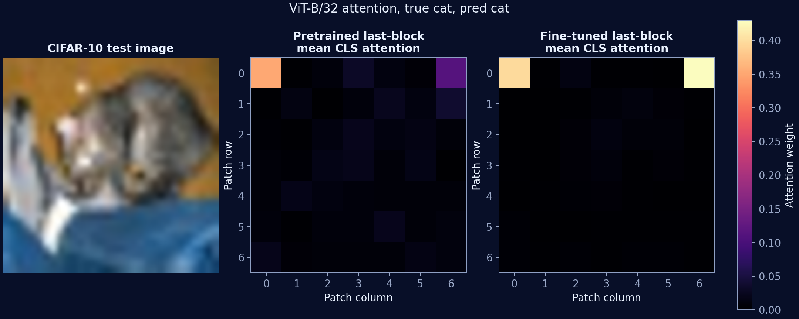

ANALYSIS · ATTENTION
What the CLS token learns to look at

Pretrained
Diffuse, low-contrast attention — the network has not yet learned what matters on CIFAR-10.
Fine-tuned
Attention concentrates on discriminative patches for the predicted class.
Reading
Last-block, mean CLS attention over all heads — one example, diagnostic, not causal.
MEAN CLS ATTENTION · LAST BLOCK · 7×7 PATCH GRID · SINGLE TEST EXAMPLE (TRUE vs PREDICTED LABEL IN FIGURE TITLE)
08 / 13